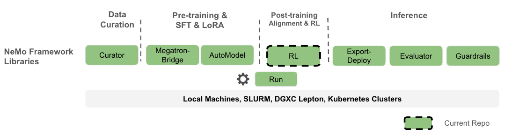
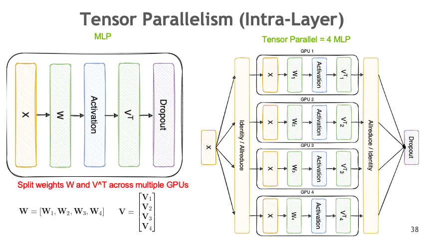
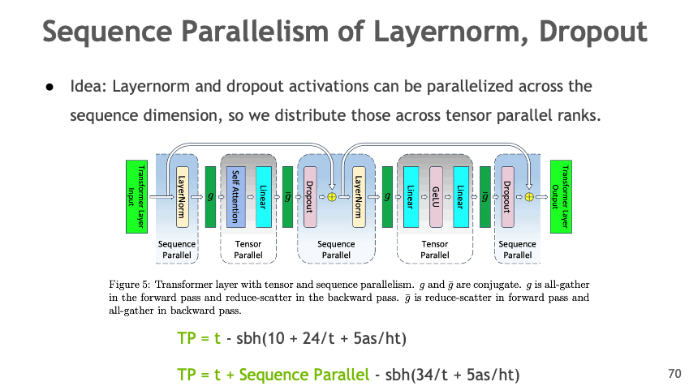
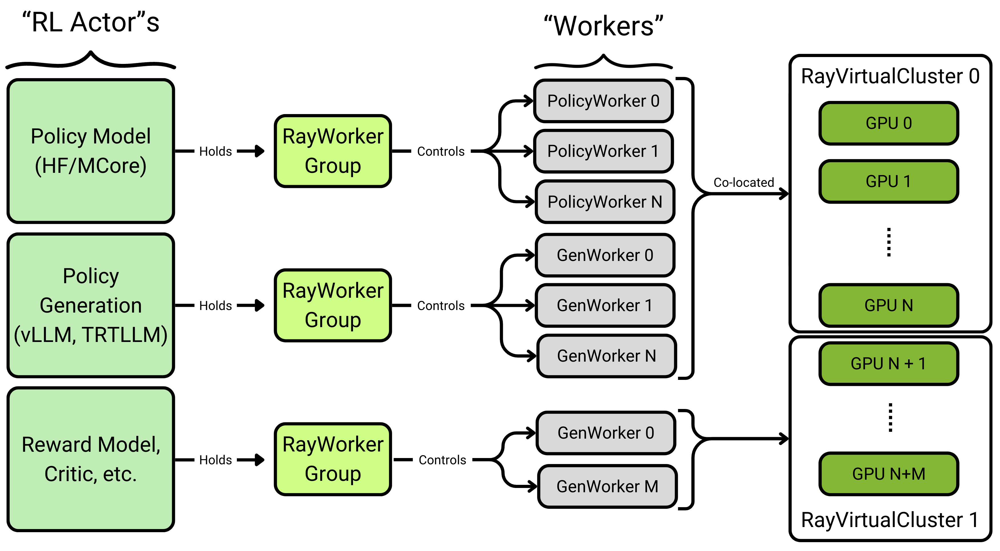

NVIDIA AI Stack#
Nemotron training recipes are built on NVIDIA’s AI stack. While nemotron.kit handles artifact versioning and lineage tracking and nemo_runspec provides the CLI toolkit and execution infrastructure, all heavy-lifting for distributed training is delegated to specialized NVIDIA libraries.
NeMo Framework#
Nemotron recipes are part of the broader NeMo Framework ecosystem, which provides end-to-end tools for the full LLM lifecycle:

Image credit: NeMo-RL Documentation
The Nemotron recipes focus on the Pre-training & SFT (via Megatron-Bridge) and Post-training & RL (via NeMo-RL) stages, with NeMo-Run orchestrating execution across compute backends.
Stack Overview#
Component |
Purpose |
Used In |
|---|---|---|
Distributed training primitives (TP, PP, DP, CP) |
All stages |
|
Model definitions, training loops, HF conversion |
Pretrain, SFT |
|
RL algorithms (GRPO, DPO), reward environments |
RL stage |
Megatron-Core#
Megatron-Core provides the foundational primitives for efficient large-scale distributed training. It implements the parallelism strategies that enable training models with billions of parameters across thousands of GPUs.
Parallelism Strategies#
Megatron-Core implements multiple parallelism strategies that can be combined for optimal scaling:
Tensor Parallelism (TP)#
Split model layers across GPUs to handle large weight matrices:

Image credit: Megatron-Bridge Documentation
Sequence Parallelism (SP)#
Distribute LayerNorm and Dropout activations across the sequence dimension:

Image credit: Megatron-Bridge Documentation
Expert Parallelism (EP)#
Distribute MoE experts across GPUs, which is central to Nemotron’s sparse MoE architecture:

Image credit: Megatron-Bridge Documentation
All Parallelism Types#
Parallelism |
Abbreviation |
Description |
|---|---|---|
Tensor |
TP |
Split weight matrices across GPUs |
Pipeline |
PP |
Split model layers into stages |
Data |
DP |
Replicate model, distribute batches |
Context |
CP |
Distribute long sequences across GPUs |
Expert |
EP |
Distribute MoE experts across GPUs |
Sequence |
SP |
Distribute activations in sequence dimension |
Documentation#
Megatron-Bridge#
Megatron-Bridge is a PyTorch-native library that bridges Hugging Face models with Megatron-Core. It provides production-ready training loops, checkpoint conversion, and pre-configured recipes for 20+ model architectures.
Features#
Bidirectional checkpoint conversion between Hugging Face and Megatron formats
Scalable training loop with all Megatron parallelisms
Pre-configured recipes for Llama, Qwen, DeepSeek, Nemotron, and more
Mixed precision (FP8, BF16, FP4) via Transformer Engine
PEFT with LoRA and DoRA
How Nemotron Uses It#
Nemotron’s pretraining and SFT stages use Megatron-Bridge for:
Model definition via
NemotronHModelprovider for the hybrid Mamba-Transformer architectureTraining loop with
pretrain()andfinetune()entry pointsCheckpoint management with distributed save/load in Megatron format
HF export to convert trained checkpoints back to Hugging Face format
# Example: Megatron-Bridge training entry point
from megatron.bridge.training import pretrain
from megatron.bridge.recipes.nemotronh import NemotronH4BRecipe
config = NemotronH4BRecipe().config
pretrain(config)
Configuration#
Megatron-Bridge uses a central ConfigContainer dataclass that combines:
Section |
Purpose |
|---|---|
|
Model architecture and parallelism settings |
|
Batch sizes, iterations, gradient accumulation |
|
Optimizer type, learning rate, weight decay |
|
LR schedule (warmup, decay) |
|
Data loading configuration |
|
Save/load intervals and paths |
|
FP8/BF16 settings |
Documentation#
NeMo-RL#
NeMo-RL is a post-training library for reinforcement learning on LLMs and VLMs, scaling from single-machine experiments to multi-node deployments.
Features#
GRPO (Group Relative Policy Optimization) – main RL algorithm with clipped policy gradients
DAPO (Dual-Clip Asymmetric Policy Optimization) – extended GRPO with asymmetric clipping
DPO (Direct Preference Optimization) – RL-free alignment from preference data
Reward Models – Bradley-Terry reward model training
Multi-Environment Training – math, code, tool-use, and custom reward environments
Flexible Backends – DTensor (FSDP2) for native PyTorch, Megatron for large models
How Nemotron Uses It#
Nemotron’s RL stage uses NeMo-RL for:
GRPO Training with multi-environment RLVR across 7 reward environments
Generation via vLLM backend for fast rollouts
Reward Computation including math verification, code execution, GenRM scoring
Ray Orchestration for distributed policy-environment coordination
# Example: NeMo-RL GRPO training
from nemo_rl.algorithms.grpo import GRPOConfig, run_grpo
config = GRPOConfig(
policy_model="nvidia/Nemotron-3-Nano-8B-SFT",
environments=["math", "code"],
num_rollouts=32,
)
run_grpo(config)
Architecture#
NeMo-RL uses a Ray-based actor model for distributed training. Each “RL Actor” (Policy, Generator, Reward Model) manages a RayWorkerGroup that controls multiple workers distributed across GPUs:

Image credit: NeMo-RL Documentation
Core concepts:
RL Actors – high-level components (Policy Model, Generator, Reward Model)
RayWorkerGroup – manages a pool of workers for each actor
Workers – individual processes handling computation
RayVirtualCluster – allocates GPU resources to worker groups
Reward Environments#
NeMo-RL provides several built-in reward environments:
Environment |
Description |
|---|---|
|
Verifies mathematical solutions |
|
Executes code in sandbox, checks correctness |
|
Scores responses with trained reward model |
|
Evaluates tool-use and function calling |
|
Game environments for multi-turn RL |
Training Backends#
Backend |
Best For |
Parallelism |
|---|---|---|
DTensor (FSDP2) |
Models up to ~32B |
FSDP, TP, CP, SP |
Megatron |
Large models (>100B) |
Full 6D parallelism |
Backend selection is automatic based on YAML configuration.
Documentation#
Version Compatibility#
Nemotron recipes are tested with specific versions of the NVIDIA AI stack. Check the container images in recipe configs for exact versions.
Component |
Tested Version |
Container |
|---|---|---|
Megatron-Core |
0.13+ |
|
Megatron-Bridge |
0.2+ |
|
NeMo-RL |
0.4+ |
|
Further Reading#
Nemotron Kit – artifact system and lineage tracking
Execution through NeMo-Run – execution profiles and packagers
Nano3 Recipe – training pipeline